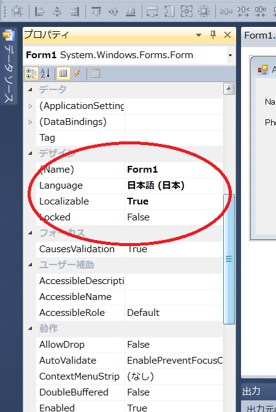
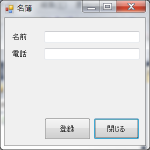

Microsoft はさすがグローバル企業の代表格 !!
開発環境自体がグローバル対応を大変意識して作られており、そのやり方さえ知っていればとても簡単に対応できます。
以下、いくつかやり方などがあるので順に説明します。
(1) まず最初にFormを新規作成した状態から話を始めます。VC#2010 でプロジェクトを新規作成すると下図のようになります。
(2) 次に、Form1のプロパティ設定中の”デザイン”にある"Localizable"を False から True へ変更します。
また
Language を (既定値) とします。VS2008およびVS2010で試した限り Language
はデフォルト状態が(既定値)となっているので変更不要のはずです。
(3) いよいよ画面に文字列などを入力してみます。ここで重要なのは「最初に Language = "既定値" の入力を行う」ということです。"既定値"の意味は、今後特殊化していく言語設定に一致する言語が無い場合にデフォルトで使用される Language という意味です。よくわからなければそのまま読み流してください。後で試験するときにもう一度説明します。
ここでは"既定値"として英語を選択し、画面を全て英語表記で作成します。
短絡的ですけれども名簿をイメージした下記のような画面を作成してみました。
NOTE
"既定値(デフォルト)" の言語表記を English (英語) として作成し、ローカライズで日本語を含む各種言語を追加実装する、を基本にしましょう。
この手順で作成することで、プログラムで未定義の言語を選択された場合に English (英語) 表記になります。何かとこの動作が都合が良いと考えます。
(4) 次に、日本語表記を追加実装します。"Language" を "日本語" に変更します。

(5) 続けて、Form画面上の文字列を日本語表記に変更します。例えば文字列が長くなったりなどして部品の位置や大きさを変えたくなった場合、問題ないので修正しちゃってください。
で、できた画面が下図の通りです。

これで二ヶ国語の表示に対応したプログラムは完成です。Windows OS が日本語であれば日本語表記を、日本語以外であれば英語表記を、自動的にプログラムは切り替えしてくれます。
この時点でのファイル構成は数のようになっています。二種類の resx ファイルができていることがわかります。デフォルトの情報が"Form1.resx"、日本語用が"Form1.ja-JP.resx"です。デフォルト設定を基本とし、差分情報のみが特殊化された"Form1.ja-JP.resx"に保存されます。
生成されたファイル達は下図のとおり。
図. 「bin\Debug」フォルダ内にあるファイル
普通にプログラムを起動すると日本語表記でアプリが起動します。フォルダ「ja-JP」を消したり他の名前にすると英語表記でアプリが起動します。
ということは、もし言語のみを追加したい場合はその言語に対応するフォルダとdllだけを追加すれば自動的に複数の国表現に対応できる、ということのようです。C#ってなかなか良くできたプログラム言語です。
(6) 次にこれが正しく表示されることを確認します。とはいえ、普通の人は日本語Windows以外を持っていないでしょうから、プログラムをちょこっと修正して動作確認します。
コントロールパネルの中に「地域と言語」を設定できるものがあります。その中に形式というものがあるので、この設定をアプリケーションの言語表示設定に使用できるようにプログラムを修正します。以下はWindows7の例ですが、WindowsXPでも同様のものがあり意図通りに全て動作しました。
具体的な作業としてはプログラム起動直後の処理に次の二行を加えます。
System.Threading.Thread.CurrentThread.CurrentCulture = System.Globalization.CultureInfo.CurrentCulture; System.Threading.Thread.CurrentThread.CurrentUICulture = System.Globalization.CultureInfo.CurrentCulture;
Main() に記載するのが良いでしょう。とすると、たぶん以下のような感じになるでしょう。
static class Program
{
[STAThread]
static void Main() {
System.Threading.Thread.CurrentThread.CurrentCulture = System.Globalization.CultureInfo.CurrentCulture;
System.Threading.Thread.CurrentThread.CurrentUICulture = System.Globalization.CultureInfo.CurrentCulture;
Application.EnableVisualStyles();
Application.SetCompatibleTextRenderingDefault(false);
Application.Run(new Form1());
}
}
これで全て完成です。先ほどの言語設定で、"日本語" または "日本語以外" の言語を設定してからプログラムを起動してみてください。それぞれの言語に対応した画面で表示されるはずです。
（注意）2012年3月17日 本文章記載時点においてWindows7 Pro. 64bit の環境で評価する限り、上記言語設定を変更した直後に起動したプログラムは旧設定の言語にて表示されました。続けて二度目にプログラムを起動すると正常に表示されました。OSのキャッシュのようなものが効いているような感じに見えます。
通常言語設定をコロコロ変更することは考えれないので、ほとんどの場合は上記内容で十分に使用に耐えると考えます。プログラムのテスト性を考えると上記で行った言語設定に従う、という実装をデフォルトに使用しても良いように思います。共有ＰＣを複数の言語で使用したい場合には、使用者ごとに言語設定を変えることすらできるので、こちらの方がむしろ気持ちよいです。
今度はリソースとしてもっている文字列情報を上記の操作で切り替えることを行います。
(1) まずはデフォルト画面を作成します。前述のプログラムをベースに追加します。住所を記載するつもりの label3 と TextBox を追加しました。以下ではこの label3 に表記する内容をリソースに記録することを行い、前述と同様に言語切り替えで表示を切り替えられるようにします。
(2) label3 に表記する文字列を、名前を"address"、値を"Address"、で登録します。
リソース編集画面を出す方法はいろいろありますが、今後の説明の都合もあるので、ここでは下図の Resources.resx
ファイルをダブルクリックして開いてください。他の方法としてはプロジェクト名を右クリックして表示される「プロパティ」を選択する、という方法もあります。
(3) Form の Load イベントで label3 の表示をリソースで定められた内容に書き換えます。
public partial class Form1 : Form
{
public Form1()
{
InitializeComponent();
}
private void button1_Click(object sender, EventArgs e)
{
Close();
}
private void Form1_Load(object sender, EventArgs e)
{
label3.Text = Properties.Resources.address;
}
}
図. 日本語以外の言語設定で起動した場合
図. 日本語設定で起動した場合
(4) Resources.ja-JP.resx を作成
Resources.ja-JP.resx を作成します。といっても新規作成するわけではなく、ソリューションエクスプローラ上で Resources.resx をコピーし、その後ファイル名を "Resources.ja-JP.resx" へ変更するだけです。
そして新しく作成した "Resources.ja-JP.resx" をダブルクリックし、リソース内の文字列情報を日本語に変更します。"Resources.ja-JP.resx"をコピーして文字列変更した後の画面を下図に示します。
(5)以上でプログラムの作成は終了です。
プログラムをコンパイルし、日本語と日本語以外の設定でそれぞれ動作を試してみてください。正しくプログラムできていれば以下のようになるはずです。
サンプルプログラム ダウンロード
本ページの情報は、特記無い限り下記 MIT ライセンスで提供されます。
| 2023-04-02 | - | ページデザイン刷新 |
| 2012-03-17 | - | 新規作成 |